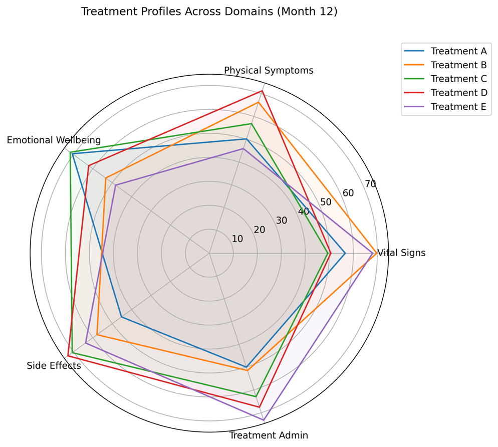
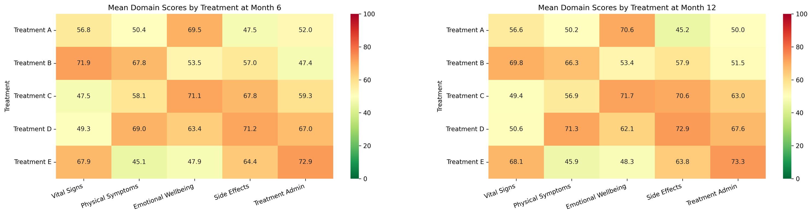
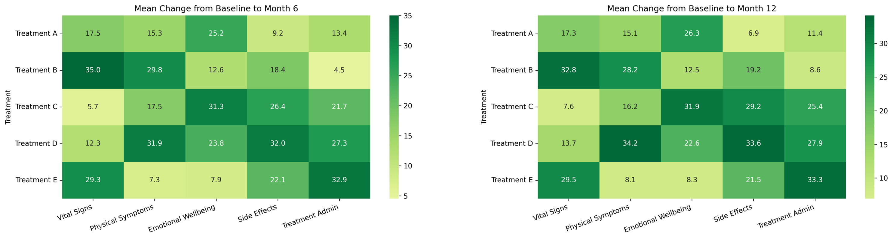
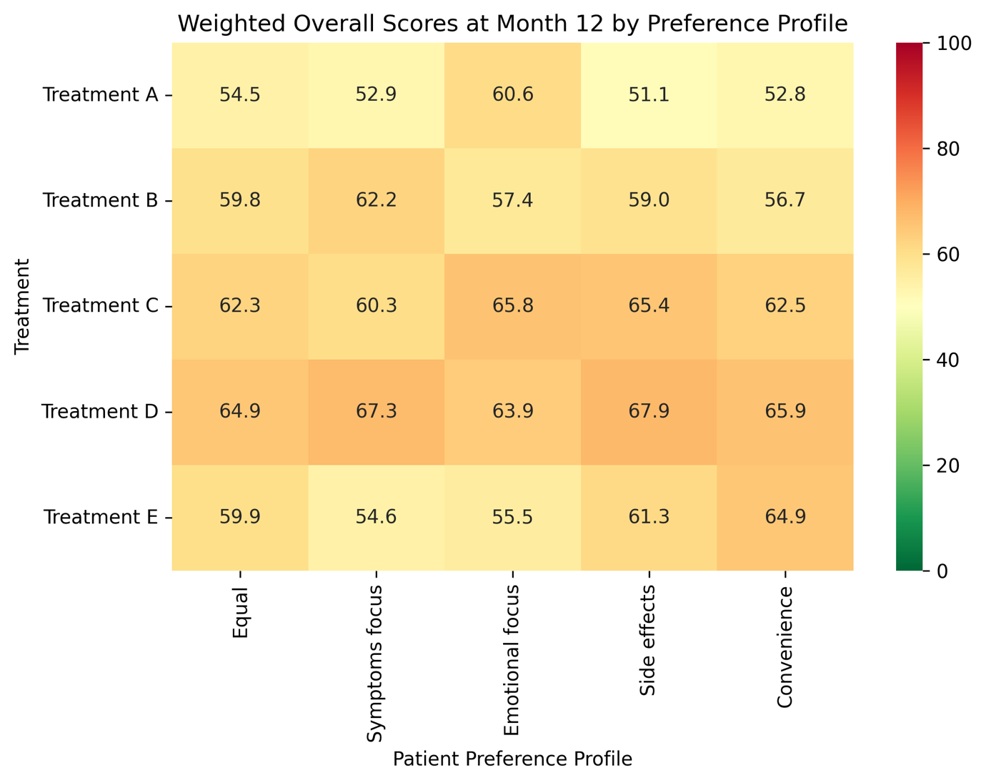
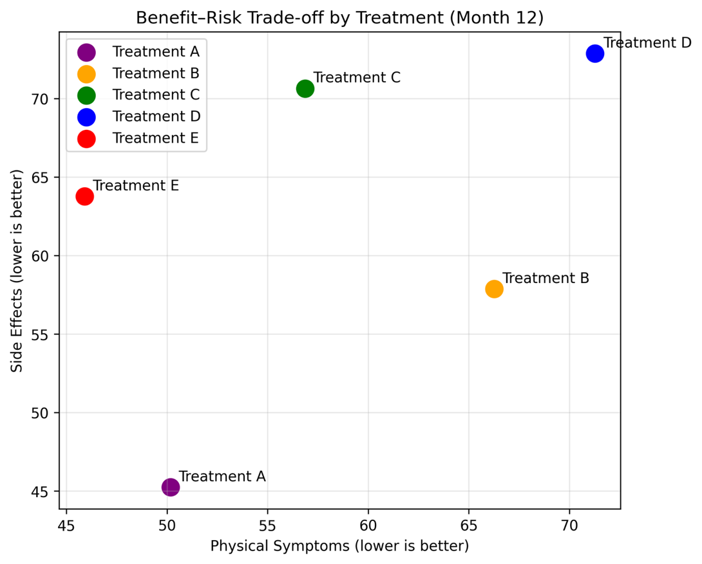
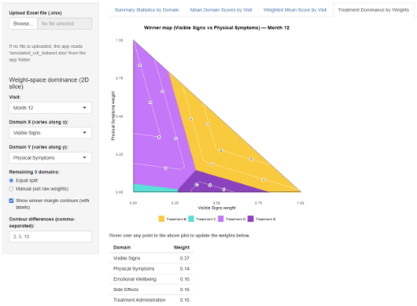

Treatment Attributes
The current challenge considers a hypothetical measure, the “Complete Disease Index” (CDI). The measure consists of five domains, each scored on a visual analogue scale from 0-100 (0=worst possible outcome, 100=best possible outcome). The simulated data reflects a trial where 500 participants, randomized at random to one of five treatment arms, score each CDI domain at Baseline and two follow-up visits (after 6 and 12 months).
The challenge is to compare the relative performance of the treatments across the individual domains and overall, considering how this might change depending on the importance that subjects place on each domain.






# ---- Packages ----
library(shiny)
library(readxl)
library(dplyr)
library(tidyr)
library(DT)
library(ggplot2)
library(patchwork)
# Optional: metR for labeling contour lines (winner margins)
has_metR <- requireNamespace("metR", quietly = TRUE)
# ---- Constants / Mapping ----
domain_map <- c(
VS = "Visible Signs",
PS = "Physical Symptoms",
EW = "Emotional Wellbeing",
SE = "Side Effects",
TA = "Treatment Administration"
)
dom_codes <- names(domain_map)
treatment_levels <- paste("Treatment", LETTERS[1:5])
visit_levels <- c("Baseline", "Month 6", "Month 12")
# Treatment colours (A→E)
trtp_colors <- c(
"Treatment A" = "#D08F16",
"Treatment B" = "#FFC82E",
"Treatment C" = "#35E1D6",
"Treatment D" = "#C676Fa",
"Treatment E" = "#8C41C0"
)
# Helpers: code <-> full name
code_to_full <- function(code) unname(domain_map[code])
full_to_code <- function(full) names(domain_map)[match(full, domain_map)]
# ---- Tab 1: Summary Builder ----
build_summary_table <- function(
dat,
digits_meanmed = 1,
digits_sd = 2,
digits_minmax = 1
) {
validate(need(all(c("USUBJID","TRTP","AVISIT","PARAMCD","AVAL") %in% names(dat)),
"Input data must contain columns: USUBJID, TRTP, AVISIT, PARAMCD, AVAL"))
ordered_stats <- c("n", "Mean (SD)", "Median", "Min", "Max")
out <- dat %>%
mutate(
Visit = factor(AVISIT, levels = visit_levels),
Domain = dplyr::recode(PARAMCD, !!!domain_map),
TRTP = factor(TRTP, levels = treatment_levels)
) %>%
group_by(Visit, Domain, TRTP, .drop = FALSE) %>%
summarise(
n = sum(!is.na(AVAL)),
mean = if (n() > 0) mean(AVAL, na.rm = TRUE) else NA_real_,
sd = if (n() > 1) sd(AVAL, na.rm = TRUE) else NA_real_,
median = if (n() > 0) median(AVAL, na.rm = TRUE) else NA_real_,
min = if (n() > 0) min(AVAL, na.rm = TRUE) else NA_real_,
max = if (n() > 0) max(AVAL, na.rm = TRUE) else NA_real_,
.groups = "drop"
) %>%
mutate(
n_char = as.character(n),
mean_char = ifelse(is.finite(mean),
sprintf(paste0("%.", as.integer(digits_meanmed), "f"), mean),
NA_character_),
sd_char = ifelse(is.finite(sd),
sprintf(paste0("%.", as.integer(digits_sd), "f"), sd),
NA_character_),
median_char = ifelse(is.finite(median),
sprintf(paste0("%.", as.integer(digits_meanmed), "f"), median),
NA_character_),
min_char = ifelse(is.finite(min),
sprintf(paste0("%.", as.integer(digits_minmax), "f"), min),
NA_character_),
max_char = ifelse(is.finite(max),
sprintf(paste0("%.", as.integer(digits_minmax), "f"), max),
NA_character_)
) %>%
mutate(
sd_disp = ifelse(is.na(sd_char), "", sd_char),
`Mean (SD)` = ifelse(!is.na(mean_char),
paste0(mean_char, " (", sd_disp, ")"),
NA_character_)
) %>%
select(Visit, Domain, TRTP,
`n` = n_char,
`Mean (SD)`,
Median = median_char,
Min = min_char,
Max = max_char) %>%
pivot_longer(
cols = c(`n`, `Mean (SD)`, Median, Min, Max),
names_to = "Statistic", values_to = "Value"
) %>%
mutate(Statistic = factor(Statistic, levels = ordered_stats)) %>%
pivot_wider(names_from = TRTP, values_from = Value) %>%
arrange(Visit, Domain, Statistic) %>%
select(Visit, Domain, Statistic,
`Treatment A`, `Treatment B`, `Treatment C`, `Treatment D`, `Treatment E`)
out$stat_order <- as.integer(out$Statistic)
out
}
# ---- Tab 2: Mean-by-Visit Builder ----
build_mean_by_visit <- function(dat) {
dat %>%
mutate(
Visit = factor(AVISIT, levels = visit_levels),
Domain = dplyr::recode(PARAMCD, !!!domain_map),
TRTP = factor(TRTP, levels = treatment_levels)
) %>%
group_by(Domain, Visit, TRTP, .drop = FALSE) %>%
summarise(
n = sum(!is.na(AVAL)),
mean = if (n() > 0) mean(AVAL, na.rm = TRUE) else NA_real_,
.groups = "drop"
) %>%
arrange(Domain, Visit, TRTP)
}
# ---- Tab 3: Weighted-score Builder ----
build_weighted_means <- function(dat, weights_raw) {
if (is.null(weights_raw) || length(weights_raw) != 5) {
weights_raw <- c(VS = 1, PS = 1, EW = 1, SE = 1, TA = 1)
}
w_sum <- sum(weights_raw, na.rm = TRUE)
if (!is.finite(w_sum) || w_sum <= 0) {
w <- rep(1/5, 5); names(w) <- dom_codes
} else {
w <- as.numeric(weights_raw) / w_sum; names(w) <- names(weights_raw)
}
wide <- dat %>%
mutate(
Visit = factor(AVISIT, levels = visit_levels),
TRTP = factor(TRTP, levels = treatment_levels)
) %>%
select(USUBJID, TRTP, Visit, PARAMCD, AVAL) %>%
tidyr::pivot_wider(
names_from = PARAMCD, values_from = AVAL,
values_fn = list(AVAL = mean)
)
weighted <- wide %>%
rowwise() %>%
mutate(
ws = {
vals <- c(VS = get0("VS", ifnotfound = NA_real_),
PS = get0("PS", ifnotfound = NA_real_),
EW = get0("EW", ifnotfound = NA_real_),
SE = get0("SE", ifnotfound = NA_real_),
TA = get0("TA", ifnotfound = NA_real_))
mask <- !is.na(vals)
if (!any(mask)) {
NA_real_
} else {
w_eff <- w[mask]; w_eff <- w_eff / sum(w_eff)
sum(vals[mask] * w_eff, na.rm = TRUE)
}
}
) %>%
ungroup()
weighted %>%
group_by(Visit, TRTP, .drop = FALSE) %>%
summarise(
n = sum(!is.na(ws)),
mean = if (n() > 0) mean(ws, na.rm = TRUE) else NA_real_,
.groups = "drop"
) %>%
arrange(Visit, TRTP)
}
# ---- Tab 4: Helpers (Dominance by Weights, 2D only) ----
mean_matrix_by_visit <- function(means_df, visit_choice) {
dfv <- means_df %>% filter(Visit == visit_choice)
M <- matrix(NA_real_, nrow = length(dom_codes), ncol = length(treatment_levels),
dimnames = list(dom_codes, treatment_levels))
for (tt in treatment_levels) {
M[, tt] <- dfv %>%
filter(TRTP == tt) %>%
mutate(PARAMCD = names(domain_map)[match(Domain, domain_map)]) %>%
arrange(factor(PARAMCD, levels = dom_codes)) %>%
pull(mean)
}
M
}
composite_scores <- function(W, M) W %*% M
# Construct full 5-weight vectors for a 2D slice
build_weights_2d <- function(dom_x, dom_y, wx, wy, remainder_mode = "equal", remainder_weights = NULL) {
wx <- pmax(0, pmin(1, wx))
wy <- pmax(0, pmin(1, wy))
mask_triangle <- (wx + wy) <= 1 + 1e-9
wx[!mask_triangle] <- NA_real_
wy[!mask_triangle] <- NA_real_
rest <- 1 - (wx + wy)
others <- setdiff(dom_codes, c(dom_x, dom_y))
W <- matrix(0, nrow = length(wx), ncol = 5, dimnames = list(NULL, dom_codes))
W[, dom_x] <- wx
W[, dom_y] <- wy
if (remainder_mode == "manual" && !is.null(remainder_weights)) {
rw <- as.numeric(remainder_weights[others]); names(rw) <- others
denom <- sum(rw, na.rm = TRUE)
if (!is.finite(denom) || denom <= 0) {
for (o in others) W[, o] <- rest / 3
} else {
frac <- rw / denom
for (o in others) W[, o] <- rest * frac[o]
}
} else {
for (o in others) W[, o] <- rest / 3
}
W
}
# Build a triangular grid (2D slice) and compute winner + margin
build_grid_2d <- function(dom_x, dom_y, M, remainder_mode = "equal", remainder_weights = NULL, n = 280) {
gx <- seq(0, 1, length.out = n)
grd <- expand.grid(wx = gx, wy = gx) %>%
filter(wx + wy <= 1 + 1e-9)
W <- build_weights_2d(dom_x, dom_y, grd$wx, grd$wy, remainder_mode, remainder_weights)
S <- composite_scores(W, M)
win_idx <- max.col(S, ties.method = "first")
winners <- colnames(S)[win_idx]
margins <- apply(S, 1, function(v) {
sv <- sort(v, decreasing = TRUE)
if (length(sv) >= 2) sv[1] - sv[2] else NA_real_
})
cbind(grd, W, winner = winners, margin = margins, stringsAsFactors = FALSE)
}
# ---- Small helper: parse contour level string "2, 5, 10" -> numeric vector c(2,5,10)
parse_contour_levels <- function(txt, default = c(2, 5, 10)) {
if (is.null(txt) || !nzchar(trimws(txt))) {
lev <- default
} else {
raw <- unlist(strsplit(txt, "[,;\\s]+"))
raw <- raw[nzchar(raw)]
num <- suppressWarnings(as.numeric(raw))
lev <- num[is.finite(num)]
if (length(lev) == 0) lev <- default
}
sort(unique(round(lev, 6)))
}
# ---- UI ----
ui <- fluidPage(
div(
h1("WWW March 2026", style = "margin-bottom:0px;"),
h4("NOTE: This app was generated using code provided by Microsoft CoPilot. Code should undergo human review prior to reuse", style = "color:#555; margin-top:4px; margin-bottom:20px;")
),
sidebarLayout(
sidebarPanel(
width = 2,
# Always-visible controls
fileInput("file", "Upload Excel file (.xlsx)", accept = c(".xlsx")),
helpText("If no file is uploaded, the app reads 'simulated_cdi_dataset.xlsx' from the app folder."),
hr(),
# Tab 1 controls
conditionalPanel(
condition = "input.tabs == 'Summary Statistics by Domain'",
numericInput("digits_meanmed", "Decimal places: Mean & Median", value = 1, min = 0, max = 6, step = 1),
numericInput("digits_sd", "Decimal places: SD", value = 2, min = 0, max = 6, step = 1),
numericInput("digits_minmax", "Decimal places: Min & Max", value = 0, min = 0, max = 6, step = 1),
hr(),
downloadButton("download_csv", "Download table (CSV)")
),
# Tab 2 controls
conditionalPanel(
condition = "input.tabs == 'Mean Domain Scores by Visit'",
radioButtons("plot_mode", "Display:", choices = c("All domains" = "all", "Single domain" = "single"),
selected = "all"),
conditionalPanel(
condition = "input.plot_mode == 'single'",
selectInput("single_domain", "Domain:", choices = unname(domain_map), selected = "Visible Signs")
)
),
# Tab 3 controls - weights
conditionalPanel(
condition = "input.tabs == 'Weighted Mean Score by Visit'",
h4("Domain weights"),
helpText("Enter any non-negative weights; they will be rescaled to sum to 1."),
numericInput("w_vs", "Visible Signs (VS)", value = 1, min = 0, step = 0.1),
numericInput("w_ps", "Physical Symptoms (PS)", value = 1, min = 0, step = 0.1),
numericInput("w_ew", "Emotional Wellbeing (EW)", value = 1, min = 0, step = 0.1),
numericInput("w_se", "Side Effects (SE)", value = 1, min = 0, step = 0.1),
numericInput("w_ta", "Treatment Administration (TA)", value = 1, min = 0, step = 0.1)
),
# Tab 4 controls - 2D dominance slice (user-defined contours)
conditionalPanel(
condition = "input.tabs == 'Treatment Dominance by Weights'",
h4("Weight-space dominance (2D slice)"),
selectInput("dom_visit", "Visit:", choices = visit_levels, selected = "Month 12"),
selectInput("dom_x", "Domain X (varies along x):", choices = unname(domain_map), selected = "Visible Signs"),
selectInput("dom_y", "Domain Y (varies along y):", choices = unname(domain_map), selected = "Physical Symptoms"),
radioButtons("dom_rest_mode", "Remaining 3 domains:",
choices = c("Equal split" = "equal", "Manual (set raw weights)" = "manual"),
selected = "equal"),
conditionalPanel(
condition = "input.dom_rest_mode == 'manual'",
sliderInput("rest_w1", "Raw weight for remaining domain 1:", min = 0, max = 10, value = 1, step = 0.1),
sliderInput("rest_w2", "Raw weight for remaining domain 2:", min = 0, max = 10, value = 1, step = 0.1),
sliderInput("rest_w3", "Raw weight for remaining domain 3:", min = 0, max = 10, value = 1, step = 0.1)
),
checkboxInput("dom_show_margin", "Show winner margin contours (with labels)", value = TRUE),
textInput("dom_levels_text", "Contour differences (comma-separated):", value = "2, 5, 10")
)
),
mainPanel(
width = 10,
tabsetPanel(
id = "tabs",
tabPanel("Summary Statistics by Domain", DTOutput("summary_tbl")),
tabPanel("Mean Domain Scores by Visit", br(), plotOutput("plots_domains")),
tabPanel("Weighted Mean Score by Visit", br(), plotOutput("plot_weighted", height = "450px")),
tabPanel(
"Treatment Dominance by Weights",
br(),
plotOutput("dom_plot_slice", hover = "dom_hover", height = "600px", width = "600px"),
br(),
uiOutput("dom_hover_instruction"), # <── NEW LINE
tableOutput("dom_hover_weights"),
tableOutput("dom_hover_scores")
)
)
)
)
)
# ---- Server ----
server <- function(input, output, session) {
# Source data
raw_data <- reactive({
if (!is.null(input$file)) {
readxl::read_excel(input$file$datapath,
col_types = c("text", "text", "text", "text", "numeric"))
} else {
req(file.exists("simulated_cdi_dataset.xlsx"))
readxl::read_excel("simulated_cdi_dataset.xlsx",
col_types = c("text", "text", "text", "text", "numeric"))
}
})
# ---------- TAB 1 ----------
summary_table <- reactive({
digits_meanmed <- if (!is.null(input$digits_meanmed)) input$digits_meanmed else 1
digits_sd <- if (!is.null(input$digits_sd)) input$digits_sd else 2
digits_minmax <- if (!is.null(input$digits_minmax)) input$digits_minmax else 1
build_summary_table(
raw_data(),
digits_meanmed = digits_meanmed,
digits_sd = digits_sd,
digits_minmax = digits_minmax
)
})
output$summary_tbl <- renderDT({
df <- summary_table()
n_cols <- ncol(df)
stat_order_js_idx <- n_cols - 1L
datatable(
df,
rownames = FALSE,
extensions = c("FixedColumns","Buttons"),
options = list(
dom = "Bfrtip",
buttons = c("copy", "csv", "excel"),
pageLength = 25,
scrollX = TRUE,
fixedColumns = list(leftColumns = 3),
orderFixed = list(post = list(list(stat_order_js_idx, 'asc'))),
columnDefs = list(
list(orderable = TRUE, targets = c(0, 1)),
list(orderable = FALSE, targets = c(2, 3, 4, 5, 6, 7, stat_order_js_idx)),
list(visible = FALSE, targets = stat_order_js_idx)
),
order = list()
)
)
})
output$download_csv <- downloadHandler(
filename = function() paste0("summary_by_domain_", Sys.Date(), ".csv"),
content = function(file) {
readr::write_csv(summary_table(), file, na = "")
}
)
# ---------- TAB 2 ----------
mean_by_visit <- reactive({
build_mean_by_visit(raw_data())
})
plot_domain_lines <- function(domain_name, df) {
ggplot(
df %>% filter(Domain == domain_name),
aes(x = Visit, y = mean, group = TRTP, color = TRTP)
) +
geom_line(linewidth = 1) +
geom_point(size = 2) +
scale_color_manual(values = trtp_colors, drop = FALSE, guide = guide_legend(title = NULL)) +
scale_x_discrete(drop = FALSE, limits = visit_levels, expand = expansion(mult = 0.01)) +
coord_cartesian(ylim = c(0, 100), clip = "on") +
labs(title = domain_name, x = NULL, y = NULL, color = NULL) +
theme_minimal(base_size = 12) +
theme(
plot.title = element_text(face = "bold", hjust = 0.5),
legend.position = "bottom",
panel.grid.major.x = element_blank(),
panel.grid.minor.x = element_blank(),
plot.margin = margin(t = 5, r = 16, b = 10, l = 16)
)
}
output$plots_domains <- renderPlot(
{
req(mean_by_visit())
mv <- mean_by_visit()
mode <- if (!is.null(input$plot_mode)) input$plot_mode else "all"
if (identical(mode, "single")) {
dom <- if (!is.null(input$single_domain)) input$single_domain else "Visible Signs"
plot_domain_lines(dom, mv) + theme(legend.position = "bottom")
} else {
p_vs <- plot_domain_lines("Visible Signs", mv)
p_ps <- plot_domain_lines("Physical Symptoms", mv)
p_ew <- plot_domain_lines("Emotional Wellbeing", mv)
p_se <- plot_domain_lines("Side Effects", mv)
p_ta <- plot_domain_lines("Treatment Administration", mv)
(p_vs | p_ps | p_ew | p_se | p_ta) +
plot_layout(ncol = 5, guides = "collect") &
theme(legend.position = "bottom")
}
},
height = function() {
mode <- if (!is.null(input$plot_mode)) input$plot_mode else "all"
if (identical(mode, "single")) 520 else 420
}
)
# ---------- TAB 3 ----------
normalised_weights <- reactive({
w_raw <- c(
VS = if (!is.null(input$w_vs)) input$w_vs else 1,
PS = if (!is.null(input$w_ps)) input$w_ps else 1,
EW = if (!is.null(input$w_ew)) input$w_ew else 1,
SE = if (!is.null(input$w_se)) input$w_se else 1,
TA = if (!is.null(input$w_ta)) input$w_ta else 1
)
w_sum <- sum(w_raw, na.rm = TRUE)
if (!is.finite(w_sum) || w_sum <= 0) {
w <- rep(1/5, 5); names(w) <- dom_codes; w
} else {
w_raw / w_sum
}
})
weighted_means <- reactive({
req(raw_data())
build_weighted_means(raw_data(), normalised_weights())
})
output$plot_weighted <- renderPlot({
req(weighted_means())
dfw <- weighted_means()
w <- normalised_weights()
cap <- sprintf(
"Weights (normalised): VS=%.2f, PS=%.2f, EW=%.2f, SE=%.2f, TA=%.2f",
w["VS"], w["PS"], w["EW"], w["SE"], w["TA"]
)
ggplot(
dfw,
aes(x = Visit, y = mean, group = TRTP, color = TRTP)
) +
geom_line(linewidth = 1.2) +
geom_point(size = 2.5) +
scale_color_manual(values = trtp_colors, drop = FALSE, guide = guide_legend(title = NULL)) +
scale_x_discrete(drop = FALSE, limits = visit_levels, expand = expansion(mult = 0.01)) +
coord_cartesian(ylim = c(0, 100), clip = "on") +
labs(title = "Weighted Mean Score by Visit", x = NULL, y = NULL, color = NULL, caption = cap) +
theme_minimal(base_size = 13) +
theme(
plot.title = element_text(face = "bold", hjust = 0.5),
legend.position = "bottom",
panel.grid.major.x = element_blank(),
panel.grid.minor.x = element_blank(),
plot.margin = margin(t = 5, r = 16, b = 10, l = 16),
plot.caption = element_text(size = 10, hjust = 0),
plot.caption.position = "plot"
)
})
# ---------- TAB 4 (2D dominance slice) ----------
means_by_visit <- reactive({
build_mean_by_visit(raw_data())
})
# Keep Domain Y different from Domain X
observeEvent(input$dom_x, ignoreInit = TRUE, {
choices <- setdiff(unname(domain_map), input$dom_x)
sel <- if (!is.null(input$dom_y) && input$dom_y %in% choices) input$dom_y else choices[1]
updateSelectInput(session, "dom_y", choices = choices, selected = sel)
})
# Update labels of manual sliders for the three remainder domains
current_remainders <- reactive({
dx <- full_to_code(input$dom_x)
dy <- full_to_code(input$dom_y)
others <- setdiff(dom_codes, c(dx, dy))
list(codes = others, labels = unname(domain_map[others]))
})
observe({
req(input$dom_rest_mode == "manual")
rem <- current_remainders()
if (length(rem$labels) == 3) {
updateSliderInput(session, "rest_w1", label = paste("Raw weight for", rem$labels[1], "(", rem$codes[1], ")"))
updateSliderInput(session, "rest_w2", label = paste("Raw weight for", rem$labels[2], "(", rem$codes[2], ")"))
updateSliderInput(session, "rest_w3", label = paste("Raw weight for", rem$labels[3], "(", rem$codes[3], ")"))
}
})
# Render 2D winner map (with robustly labeled, user-defined contour levels if metR available)
output$dom_plot_slice <- renderPlot({
req(means_by_visit()); req(input$dom_x, input$dom_y, input$dom_visit)
if (identical(input$dom_x, input$dom_y)) return(NULL)
mv <- means_by_visit()
M <- mean_matrix_by_visit(mv, input$dom_visit)
dx <- full_to_code(input$dom_x)
dy <- full_to_code(input$dom_y)
rem <- current_remainders()
rem_vec <- setNames(c(input$rest_w1, input$rest_w2, input$rest_w3), rem$codes)
remainder_mode <- if (identical(input$dom_rest_mode, "manual")) "manual" else "equal"
# Build surface on a reasonably fine grid (helps label placement)
grid <- build_grid_2d(dx, dy, M, remainder_mode, rem_vec, n = 280)
# Parse user-entered contour levels (no automatic zero included)
levels <- parse_contour_levels(input$dom_levels_text, default = c(2, 5, 10))
# Base map
p <- ggplot(grid, aes(x = wx, y = wy)) +
geom_raster(aes(fill = winner), interpolate = TRUE) +
scale_fill_manual(values = trtp_colors, drop = FALSE, guide = guide_legend(title = NULL)) +
coord_fixed(ratio=1) +
coord_cartesian(xlim = c(0,1), ylim = c(0,1)) +
# Triangle boundary via annotate()
annotate("segment", x = 0, y = 0, xend = 1, yend = 0, colour = "grey30", linewidth = 0.4) +
annotate("segment", x = 0, y = 0, xend = 0, yend = 1, colour = "grey30", linewidth = 0.4) +
annotate("segment", x = 1, y = 0, xend = 0, yend = 1, colour = "grey30", linewidth = 0.4) +
labs(
title = paste0("Winner map (", input$dom_x, " vs ", input$dom_y, ") — ", input$dom_visit),
x = paste0(input$dom_x, " weight"),
y = paste0(input$dom_y, " weight")
) +
theme_minimal(base_size = 12) +
theme(
plot.title = element_text(face = "bold", hjust = 0.5),
legend.position = "bottom",
panel.grid.major = element_blank(),
panel.grid.minor = element_blank()
)
# Contours + labels (if enabled)
if (isTRUE(input$dom_show_margin) && length(levels) > 0) {
# Draw contour lines
p <- p + geom_contour(
aes(z = margin),
breaks = levels,
colour = "white",
alpha = 0.8,
linewidth = 0.52
)
# Add numeric labels on contours if metR is available
if (has_metR) {
p <- p + metR::geom_text_contour(
aes(z = margin),
breaks = levels,
# Multiple placement positions per level → fewer missing labels
label.placer = metR::label_placer_fraction(c(0.2, 0.5, 0.8)),
# Be permissive: allow small/curvy segments, don't skip
min.size = 0,
skip = 0,
# Readable over raster & white lines
size = 3.2,
colour = "black",
stroke = 0.25,
stroke.color = "white"
)
}
}
p
})
# Hover -> weights (2D)
last_weights <- reactiveVal(NULL)
observeEvent(input$dom_hover, {
hv <- input$dom_hover
req(!is.null(hv), means_by_visit())
x <- hv$x; y <- hv$y
if (is.null(x) || is.null(y) || x < 0 || y < 0 || x > 1 || y > 1 || (x + y) > 1) return()
dx <- full_to_code(input$dom_x)
dy <- full_to_code(input$dom_y)
rem <- current_remainders()
remainder_mode <- if (identical(input$dom_rest_mode, "manual")) "manual" else "equal"
rem_vec <- setNames(c(input$rest_w1, input$rest_w2, input$rest_w3), rem$codes)
W <- build_weights_2d(dx, dy, wx = x, wy = y, remainder_mode, rem_vec)
w_vec <- as.numeric(W[1, ]); names(w_vec) <- colnames(W)
if (abs(sum(w_vec) - 1) > 1e-6) w_vec <- w_vec / sum(w_vec)
last_weights(w_vec)
}, ignoreInit = TRUE)
output$dom_hover_instruction <- renderUI({
HTML("<div style='font-size:13px; color:#555; margin-bottom:10px;'>
<b>Hover over any point in the above plot to update the weights below.</b>
</div>")
})
output$dom_hover_weights <- renderTable({
w <- last_weights(); if (is.null(w)) return(NULL)
data.frame(Domain = code_to_full(names(w)), Weight = round(w, 3), row.names = NULL)
})
output$dom_hover_scores <- renderTable({
w <- last_weights(); req(w)
mv <- means_by_visit(); req(mv)
M <- mean_matrix_by_visit(mv, input$dom_visit)
S <- as.numeric(matrix(w, nrow = 1) %*% M)
names(S) <- colnames(M)
df <- data.frame(Treatment = names(S), Composite_Mean = round(S, 2), row.names = NULL)
df <- df[order(-df$Composite_Mean), , drop = FALSE]
df$Rank <- seq_len(nrow(df))
df[, c("Rank", "Treatment", "Composite_Mean")]
})
}
# ---- Run App ----
shinyApp(ui, server)For attribution, please cite this work as
SIG (2026, March 11). VIS-SIG Blog: Wonderful Wednesday March 2026 (72). Retrieved from https://graphicsprinciples.github.io/posts/2026-03-11-wonderful-wednesday-march-2026/
BibTeX citation
@misc{sig2026wonderful,
author = {SIG, PSI VIS},
title = {VIS-SIG Blog: Wonderful Wednesday March 2026 (72)},
url = {https://graphicsprinciples.github.io/posts/2026-03-11-wonderful-wednesday-march-2026/},
year = {2026}
}